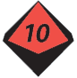

10 posts · 792 views · started 2022-07-08 16:08 UTC
FJ
fjur
2022-07-08 16:08 UTC
#1
Some effects specify that they only affect Minions. (For example, the Throw Minion and Misdirection Hero Abilities.) Do such effects affect Lieutenants as well?
I suppose my more general question is are Lieutenants a subset of Minions?
OM
Omegatron
2022-07-08 16:33 UTC
#2
I think there was a moment in the first RPG livestream series where a player wanted to use an ability that destroys a minion and the GM told them it wouldn’t work because the enemy they wanted to use it on was a lieutenant.
I can’t remember which episode that was off the top of my head though.
FJ
fjur
2022-07-08 16:56 UTC
#3
Thanks, @Omegatron! That seems about as official a ruling as one will get.
FJ
fjur
2022-07-10 15:28 UTC
#4
Here’s some evidence to the contrary: the description for the Overlord Villain Archetype reads, “Count the number of minions and lieutenants loyal to the Overlord in the scene to determine their current status.” Then under that Archetype’s Status heading, it reads,
9+ minions:
5-8 minions:

3-4 minions:
1-2 minions:
0 minions:
This seems to imply that “minions” (in the Status section) refers to both Minions and Lieutenants (as specified in the description).
This could, of course, simply be a one-time thing, wherein “minions” means “both Minions and Lieutenants.” What do you all think?
OM
Omegatron
2022-07-10 15:56 UTC (in reply to #4)
#5
It’s just shorthand, I wouldn’t expect them to write out:
9+ Minions and Lieutenants loyal to the Overlord in the scene
5-8 Minions and Lieutenants loyal to the Overlord in the scene
3-4 Minions and Lieutenants loyal to the Overlord in the scene
etc.
The point of lieutenants is to be more resilient than minions so it wouldn’t make much sense to let a player with the right ability destroy them in one shot, but I don’t think it would make much difference if you ran it the other way.
FJ
fjur
2022-07-10 16:31 UTC
#6
Yeah, those are all good points, Omegamancer.
OM
Omegatron
2022-07-10 17:44 UTC (in reply to #6)
#7
This is the second time I’ve been called that. I don’t mind, I just think it’s funny.
FJ
fjur
2022-07-10 17:52 UTC
#8
I know. I meant it as a joke/call-back.
DJ
der_andere_Jan
2022-08-23 15:46 UTC (in reply to #5)
#9
I assume the “and Lieutenants” in the Overlord description is simply an error or leftover from earlier iterations, especially when considering that archetype basically mirrors the Legion archetype.
Back when GTG asked kickstarter participants to proofread, this inconsistency was pointed out several times, unfortunately to no effect.
Still, I’d say it is very well within the freedom of any GM to decide one way or another without fear of breaking anything.
IR
Irrevenant
2022-08-27 10:38 UTC
#10
The heading on p16 is “Villains, Lieutenants, and Minions”. That strongly implies the game considers them three different things.